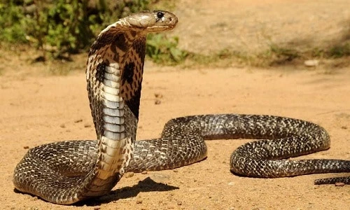
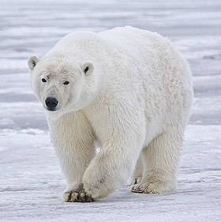
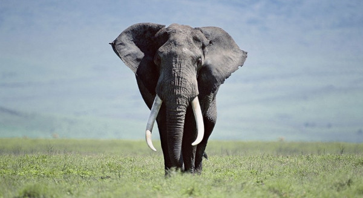
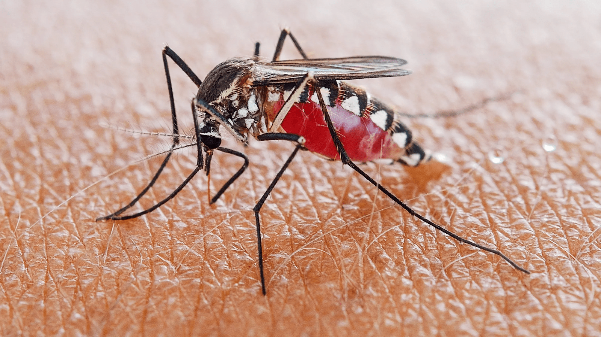
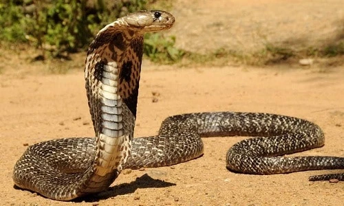
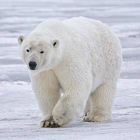
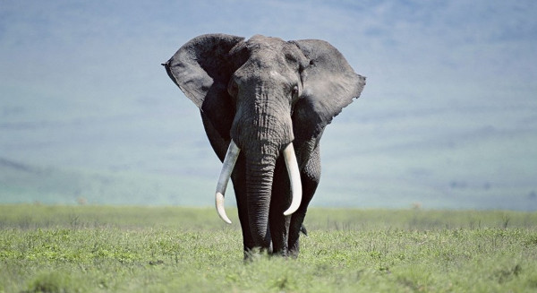
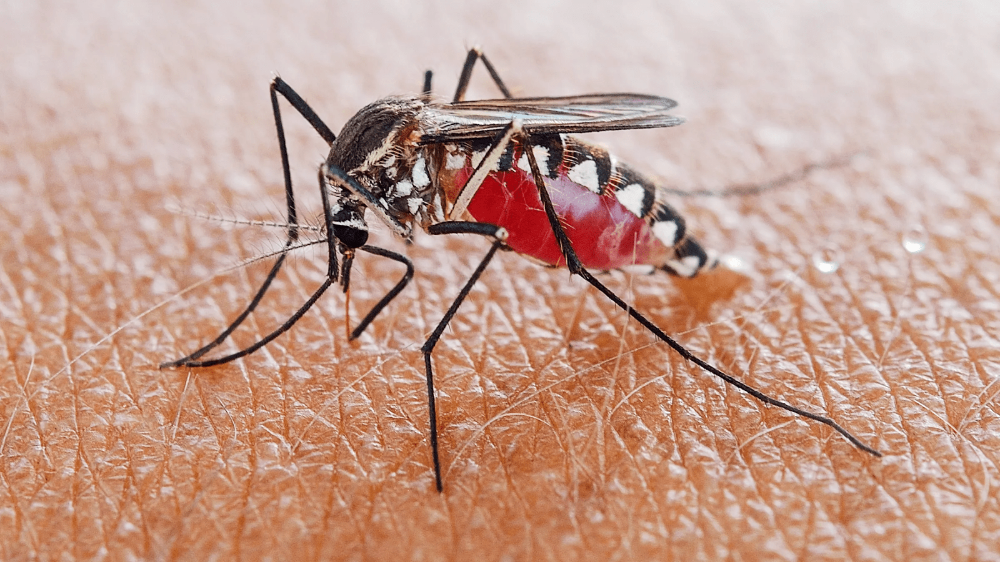

1: Những loài vật phá vỡ mọi kỷ lục
Chúng ta cho rằng loài vật không có tư duy, ấy vậy mà những khả năng kỳ diệu
do tự nhiên và đấu tranh sinh tồn ban tặng cho chúng lại khiến ta phải vắt óc
suy nghĩ để tìm hiểu.
(1) Kỷ lục ngủ:
Hoẵng chỉ ngủ 4 tiếng một ngày đã được coi là kỷ lục, vậy mà giờ đây các
nhà khoa học còn phát hiện ra rằng cá heo Dall không bao giờ biết ngủ. Ngược
lại, có một số loài sinh vật sinh ra chỉ. để ngủ. Đẩu tiên phải kể đến loài
mèo với 14 tiếng mỗi ngày. Còn loài gấu nâu ở dãy Pyrenees (Pháp) ngủ suốt
mùa Đông dài lạnh giá. Không chịu thua, loài macmốt ngủ liền 6 tháng. Tuy
nhiên, kỷ lục về ngủ lại thuộc về một con lừa và thú túi đuôi quấn châu Phi
vì chúng dành những 80% thời gian sống để ngủ, tức là 19 giờ mỗi ngày.
(2) Kỷ lục về cân nặng và kích cỡ
Nước là môi trường sống của các động vật to lớn nhất. Dài nhất là loài sứa khổng lồ: 75 mét (bằng 16 chiếc xe buýt nối đuôi nhau). Sau đó phải kể đến cá voi xanh: 35 mét. Đứng thứ ba là loài cá nhám voi khổng lồ dài 18 mét từ đẩu tới đuôi. Gẩn gũi với chúng ta hơn phải kể đến cá sấu, trăn, cá đuối cũng nằm trong “top ten” về chiều dài với 8 mét. So với những loài kể trên, hươu cao cổ và voi, mặc dù cộng thêm cả chiếc cổ và cái vòi dài ngoằng, cũng chỉ thuộc hàng tép riu: một con hươu cao cổ với cái cổ dài nhất cũng chỉ được 6 mét, còn voi đành chịu thua với 4 mét cả vòi. Nếu xét về trọng lượng, vô địch thuộc về loài cá voi xanh. Con nặng nhất có thể lên tới 190.000 kg, tương đương với trọng lượng của 30 con voi cộng lại. Đứng thứ hai là cá nhám voi (40.000 kg). Những chú voi khổng lồ chỉ xếp hàng thứ ba vì chỉ nặng có 6.000 kg. Ngoài ra, tê giác và hà mã cũng có cân nặng đáng kể, 3.000 kg mỗi con.
(3) Kỷ lục về tuổi thọ
Tạo hóa dường như đã lấy đi sự ngắn ngủi của phù du để ban tặng cho rùa sự trường tồn. Chẳng thế mà trong khi loài côn trùng này chỉ sống được vỏn vẹn một ngày thì lão rùa già lại sống được đến 150 tuổi. Còn kỷ lục sống lâu nhất của loài chim thuộc về loài hải âu: nó chỉ chịu trùng cánh khi đã sống 80 năm.
Động vật nhiều cơ nhấtAi cũng nghĩ rằng loài ngựa sống suốt cuộc đời chỉ biết chạy phải phá kỷ lục về số lượng cơ bắp. Trên thực tế, một con ngựa bình thường có 1.200 dây cơ. Tuy nhiên, kỷ lục thuộc về loài sâu với 2.000 cơ tập trung trong các đốt vòng. Điều này giải thích vì sao chúng có thể vặn vẹo hay quay người dễ dàng đến thế.
Động vật nhiều răng nhất
Châm ngôn “Cười hở mười cái răng” chỉ đúng với con người. Ấy thế vậy, một con cá sấu chỉ cần “Hé miệng cười duyên” cũng đã để lộ ra 120 chiếc răng. Trong suốt cuộc đời, một con cá sấu có hơn 3.000 chiếc răng, tức là răng của nó rụng đi mọc lại tới 25 lần. Tuy nhiên, kỷ lục nhiều răng lại thuộc về cá mập khi nó có hàm răng gồm 3.000 chiếc răng trắng xoá mà bất kỳ một hãng sản xuất kem đánh răng nào cũng phải khao khát. Ngay cả khi một chiếc bị rụng, một chiếc khác chờ sẵn nơi đúng vị trí đó và sẽ mọc ngay. Cứ như vậy, trong suốt cuộc đời, cá mập có 20.000 chiếc răng. Bên cạnh đó, kỷ lục về chiếc răng to và nặng nhất thuộc về loài voi. Trọng lượng của bộ răng sữa của voi cũng nặng
Châm ngôn "cười hở 10 cái răng" là một câu nói dân gian, không phải là một châm ngôn chính thức được ghi chép trong sách vở. Nó mang ý nghĩa tượng trưng và thường được dùng để miêu tả một nụ cười tươi tắn, rạng rỡ, thể hiện sự vui vẻ, thoải mái và chân thành.
tới 4 kg. Còn mỗi chiếc răng hàm dưới của hà mã cũng nặng tới 4 kg. Không nhiều, không to, không nặng như răng cá mập, voi hay hà mã, nhưng răng của loài hải sư lại khiến người ta phải nhớ đến vì nó dài 80 centimet, bằng chiều cao của một em bé 5 tuổi.
Động vật phàm ăn nhấtDẫn đầu danh sách các con vật phàm ăn là voi. Mỗi ngày một chú voi trưởng thành ăn hết 200 kg cỏ khô, uống hết 200 lít nước. Tiếp theo, phải kể đến kền kền và sư tử, mỗi bữa chúng có thể ăn liền một mạch hết 40 kg thức ăn. Khỉ lại nổi tiếng vì ăn nhanh, chúng có thể ăn một mạch 50 quả chuối. Về phần mình, mỗi ngày chim cổ đỏ ăn hết 4,3 m sâu (bằng chiều dài một chiếc ô tô). Cá sấu cũng không kém phần đặc biệt trong chuyện ăn uống: không kể đến những con mồi sống, cá sấu có thể ăn cả đá. Xét về khả năng nhịn ăn, họ nhà rắn phải được gọi là vua: mỗi năm chỉ cẩn ăn 8 -10 bữa ăn cũng đủ cho chúng; một con trăn có thể nhịn đói suốt 12 tháng liền, nhưng ngay khi gặp phải một chú linh dương chân đen, nó có thể xơi tái cả 60 kg này.
"Phàm ăn" là một từ Hán Việt, trong đó "phàm" có nghĩa là tầm thường, thông thường, còn "ăn" thì chỉ hành động ăn uống. Khi ghép lại, "phàm ăn" mang ý nghĩa ăn uống một cách quá độ, vượt quá mức bình thường, thường là một cách thô tục, không kiểm soát.tô. Cá sấu cũng không kém phần đặc biệt trong chuyện ăn uống: không kể đến những con mồi sống, cá sấu có thể ăn cả đá. Xét về khả năng nhịn ăn, họ nhà rắn phải được gọi là vua: mỗi năm chỉ cẩn ăn 8 -10 bữa ăn cũng đủ cho chúng; một con trăn có thể nhịn đói suốt 12 tháng liền, nhưng ngay khi gặp phải một chú linh dương chân đen, nó có thể xơi tái cả 60 kg này.
Con vật chửa đẻ ngắn nhất là thú có túi ở châu Mỹ: 12 ngày. Tiếp theo là chuột: 3 tuần. Đây cũng là lý do vì sao trên thế giới này có lắm chuột đến thế. Chiếm thứ ba là thỏ: một tháng và có thể đẻ 5 -12 con mỗi lần . Con vật chửa đẻ lâu nhất là tê giác: 1 năm 6 tháng 20 ngày và voi châu Á: 2 năm 1 tháng. Nhưng kỷ lục lại thuộc về loài kỳ nhông đen sống ở vùng núi Alpes (Pháp): 3 năm 2 tháng và 20 ngày.
(8) Thời gian giao phối ngắn nhất
Thời gian giao phối ngắn nhất thuộc về loài linh dương nhỏ và voi: một lần “chăn gối” của hai loài này chỉ vỏn vẹn có 10 và 20 giây. Thời gian mỗi lần dành cho “chuyện ấy” của khỉ maki ở Madagascar là 2 giờ. Tuy nhiên, kỷ lục lại thuộc về loài chuột nhắt: 12 giờ.
(9) Kỷ lục về khứu giácNếu ai nói với bạn rằng chó là loài vật thính mũi nhất thì đừng tin. Chó chỉ đứng hàng thứ ba về khả năng nhận ra mùi từ xa mà thôi. Phá kỷ lục trong lĩnh vực này là bướm đêm. Một con ngài đực có thể ngửi thấy mùi cách nó 11 km. Sau đó phải kể đến rái cá biển, có thể nhận ra mùi khói ở cách nó 8 km. Còn cá mập thì có thể phát hiện được mùi của một giọt máu nhỏ hoà tan trong 115 lít nước. Chó thì đứng hàng thứ ba về phát hiện mùi ở độ xa, nhưng lại dẫn đầu danh sách về con vật phân biệt được nhiều mùi: 100.000 mùi khác nhau (một chuyên gia ngửi mùi cũng chỉ phân biệt được 3.000 mùi)
(10) Kỷ lục về xây tổLoài vật xây tổ to nhất là đại bàng: các nhà khoa học đã phát hiện ra ở Ecosse một chiếc tổ sâu 4,5 mét do chính chim đại bàng làm bằng mỏ và móng chân. Kỳ công nhất là chiếc tổ của loài chim én: để xây xong một chiếc tổ, chim én phải bay đi bay lại 1.000 lần, dùng mỏ lấy bùn trộn với rãi làn nguyên vật liệu. Còn hải ly gặm đứt một khúc gỗ sồi đường kính 20 centimet trong chưa đẩy 1 đêm để xây tổ.
(11) Kỷ lục về thính giácTiếng kêu khoẻ nhất thuộc về loài cá voi xanh. Người ta tính được rằng giọng nói của nó có thể đạt tới cường độ âm thanh của một tên lửa đưa tàu con thoi vào vũ trụ. Mặt khác, vì có một cái tai rất thính, cá voi xanh có thể giao tiếp với đồng loại ở bên kia đại dương. Tiếng kêu của một chú khỉ có thể được nghe thấy trong chu vi 15 km. Còn chim diệc sao nằm trong sách Guiness với tiếng “hót” giống một con bò đang rống và phát đi xa 4 km. Nếu muốn yên tĩnh, tốt nhất là nên ở gần địa phận của thỏ: để báo hiệu nguy hiểm, loài vật này chỉ dùng chân sau đập đập vài cái xuống đất. Về phần mình, cá heo vẫn không ngừng là đối tượng của nhiều nghiên cứu vì ngôn ngữ của chúng rất đa dạng và kì bí. Đặc biệt, thính giác của chúng phát triển hơn chúng ta gấp 10 lần: chúng có thể nghe được siêu âm trong khi con người thì không thể.
(12) Kỷ lục về thị giácCác loài chim săn mồi có cái nhìn sắc nhất: chim cắt di cư có thể nhận ra một con bồ câu ở khoảng cách là 8 km; đại bàng có thể phát hiện ra một con thỏ từ trên độ cao 3.000 mét. Động vật có mắt to nhất là mực thẻ khổng lồ: thuỷ tinh thể của nó có đường kính là 38 centimet... bằng đường kính một quả bóng rổ. Ở động vật có vú, ngựa giật kỷ lục có mắt to nhất (đường kính là 5,5 centimet) và quả không sai khi người ta nói rằng ngựa nhìn thấy chúng ta to gấp 7 lần kích cỡ thực của chúng ta. Loài vật được biết đến với đôi mắt đẹp nhất là giống sò St. Jacques. Dọc trên tấm áo khoác của mình, giống sò này có hai dãy mắt gồm rất nhiều cặp mắt nhỏ xanh màu nước biển; số lượng mắt của chúng ngày càng tăng theo tuổi tác của chúng.
(13) Động vật chạy nhanh nhấtHuy chương vàng xứng đáng được trao cho loài báo với vận tốc 101 km/h. Huy chương bạc thuộc về linh dương với 98,16 km/h còn hoẵng chỉ giành được huy chương đồng với vận tốc 98 km/h.
2. Những loài vật nguy hiểm nhất thế giới
 








Chúng là những sinh vật nổi danh từ lâu như sư tử, cá mập trắng hay rắn mang bành, đến những loài quá quen thuộc xung quanh mà thậm chí bạn quên mất độ nguy hại của chúng. Dưới đây là 8 loài kẻ thù ghê gớm nhất của loài người.
(1) MuỗiHầu hết các chú muỗi đốt đều chỉ khiến bạn ngứa. Nhưng một số loài muỗi có thể mang và truyền ký sinh trùng sốt rét. Hậu quả là, những con côn trùng bé nhỏ này đã gây ra hơn hai triệu ca tử vong trên người mỗi năm.
(2) Rắn mang bành châu ÁMặc dù loài vật này không được nhận danh hiệu loài rắn độc nhất, nhưng nó lại gây hại nhiều nhất. Trong số 50.000 ca tử vong vì rắn cắn mỗi năm, rắn mang bành châu Á chiếm phần lớn nhất.
(3) Sứa hộp AustraliaCòn được gọi là ong biển, những con sứa to bằng cái bát này có thể có đến 60 xúc tu trên mỗi 4 mét chiều dài. Mỗi xúc tu có 5.000 tế bào ngòi và đủ độc tố để giết chết 60 người.
(4) Cá mập trắngMáu trong nước có thể lôi kéo những con vật này vào bữa ăn điên loạn, nơi chúng sử dụng tất cả 3.000 cái răng của mình để cắn bất cứ thứ gì chuyển động.
(5) Sư tử châu PhiNhững chiếc răng nanh khổng lồ? Thử xem. Nhanh như tia chớp? Hơn cả điều đó. Bộ vuốt sắc như dao cạo? Khỏi phải bàn. Chúng đói? Tốt hơn hết bạn hãy hy vọng là không. Những con mèo lớn này gần như là các tay đi săn hoàn hảo.
(6) Cá sấu nước mặn AustraliaĐừng nhầm con vật này với một khúc gỗ! Nó có thể nằm im trong nước, chờ đợi người đi ngang qua. Sau đó, trong chớp mắt, nó lao vào con mồi, kéo kẻ xấu số xuống nước để dìm chết và cắn nát.
(7) VoiKhông phải tất cả các con voi đều thân thiện như Dumbo. Voi giết hơn 500 người mỗi năm trên toàn thế giới. Voi châu Phi thường nặng khoảng 8 tấn đủ để đè bẹp bạn mà chưa cẩn dùng đến đôi ngà nhọn hoắt.
(8) Gấu trắngChắc chắn trong vườn thú chúng có vẻ ngoài rất dễ thương, nhưng trong tự nhiên chúng coi hải cẩu voi là bữa sáng. Thử tham dự mà xem, bạn sẽ thấy chúng dễ dàng xé toạc đầu con mồi bằng một cú đánh với những chiếc móng khổng lồ.
3: Vì sao thân cây hình trụ?
Môn hình học mách bảo chúng ta rằng diện tích của hình tròn lớn hơn bất kỳ
một hình nào khác. Do đó, với cùng một lượng nhiên liệu như nhau, muốn tạo
thành loại đồ vật có dung tích lớn nhất hoặc là có sức chứa nhiều nhất thì
hiển nhiên phải tạo thành hình tròn là thích hợp hơn cả.
Chẳng có gì là lạ khi người ta làm ống khói, ống dẫn nước đều là ống tròn.
Trên thực tế đó là một kiểu bắt chước hiện tượng tự nhiên (phòng sinh học).
Thứ hai là hình trụ tròn chịu lực tốt nhất. Trọng lượng của tán cây to tròn
đều nhờ vào sự chống giữ của thân cây. Có những loài cây sai trái, đến mùa
trên cây còn treo nặng hàng tạ quả, nếu không có cành thân khoẻ chống giữ,
làm sao có thể tồn tại được
Hơn nữa, với thân cây hình trụ tròn còn có lợi cho việc phòng chống nhiều
tác hại từ bên ngoài. Nếu thân cây là hình vuông hoặc hình chữ nhật, thân
cây ắt sẽ có các góc cạnh, dễ làm mồi cho các loài động vật gặm nhấm.
Ngoài ra, cây thân gỗ là cây lâu năm, trong đời nó khó tránh khỏi bị gió bão
tấn công. Do thân cây hình trụ tròn, cho nên dù gió lớn đến từ phía nào cũng
dễ dàng lướt qua bề mặt, chỉ phải chịu một lực nhỏ của gió mà thôi.
Mọi sinh vật đều tiến lên phía trước trên bậc thang tiến hoá của thế giới.
Hình trụ tròn của thân cây chính là kết quả hoàn hảo của sự thích nghi đó.
4. Vì sao tầm nhìn của chim ưng rất xa?
Từ trên không cao tới 2 3 nghìn mét, chim ưng có thể nhìn thấy chính xác một con
chuột đồng hoặc một con chó đang chạy dưới mặt đất. Những con mồi này không thể
nào trốn thoát. Nhờ đâu chim ưng có khả năng đó?
Chim ưng có thị lực tốt như vậy chủ yếu là do trên võng mạc trong mỗi con mắt
của nó đều có hai lỗ hõm ở giữa, so với lỗ hõm ở giữa mắt người thì nhiều hơn
một. Một trong hai lỗ hõm này chuyên nhìn thẳng, lỗ còn lại thì nhìn nghiêng. Như
vậy, phạm vi nhìn của chim ưng rộng hơn rất nhiều. Ngoài ra, mỗi cái ống trong lỗ
hõm giữa mắt của chim ưng cũng có nhiều tế bào nhìn vật hơn mắt người 6 7 lẩn.
Cho nên mắt chim ưng không những có thể nhìn xa hơn bất cứ động vật nào, mà còn
nhìn thấy rất rõ ràng
5. Cách nào phân biệt rắn độc?
Phân biệt căn bản nhất giữa hai nhóm rắn độc và không độc là ở chỗ răng độc hay
không. Răng độc khi cắn sẽ để lại vết trên da loài bị cắn.
Răng độc gồm hai loại. Một loại là răng độc hình móc câu, trên có một cái rãnh
thông với nọc độc. Loại rãnh này mọc ở phẩn trước xương hàm trên của rắn,
vạch miệng nó ra có thể trông thấy.
Một loại răng độc khác là răng ống, cũng mọc ở phía trước xương hàm trên của
con rắn. Đây là một đôi răng nhọn hơi cong và dài, ở giữa có một cái lỗ. Khi
rắn độc cắn người, cơ thịt trên tuyến độc co lại làm cho dịch độc ở trong đó ép
vào đường ống của răng độc, tiêm nọc độc vào thân thể người.
Khi bị rắn cắn có thể căn cứ vào vết răng để phân biệt độc hay không. Nếu là
rắn độc, nhất định phải có một đôi vết của răng độc trên lớp da bị thương có
thể thấy hai cái lỗ rất nhỏ. Còn khi bị rắn không độc cắn thì trên da chỉ có
vết hai hàng răng giống nhau.
6. Tại sao ngựa ngủ đứng?
Ngựa có đặc tính không giống với những gia súc khác, đó là trong đêm tối, bất kể
lúc nào chúng cũng đều nhắm mắt ngủ đứng. Thói quen này là do di truyền lại từ
tổ tiên ngựa hoang.
Những con ngựa hoang sống ở trên thảo nguyên sa mạc rộng mênh mông, trong thời xa
xưa nó vừa là đối tượng săn bắt của loài người, vừa là một món ăn ngon của
các loài thú dữ. Ngựa không giống như trâu, dê có thể dùng sừng để quyết đấu,
mà biện pháp duy nhất chỉ là bỏ chạy để thoát thân. Cơ thể chúng dài, tứ chi
khoẻ, rất thích nghi với khả năng này. Mặt khác, những động vật ăn thịt như hổ,
báo, chó sói... đa số đều hoạt động về đêm. Vì vậy, những con ngựa hoang không
dám thảnh thơi ngủ trong đêm tối, ngay cả ban ngày chúng cũng chỉ dám đứng ngủ
gật và luôn luôn đề cao cảnh giác.
Ngựa nhà mặc dù không gặp nguy hiểm bởi kẻ thù hoặc do con người gây ra
giống như ngựa hoang, nhưng nó được thuẩn hoá từ ngựa hoang. Vì vậy, thói quen
ngủ đứng của ngựa hoang vẫn còn được giữ đến ngày nay.
Ngoài ngựa, lừa cũng có thói quen ngủ đứng, bởi vì môi trường sống của tố tiên
chúng gẩn giống với ngựa hoang.
7: Vì sao ngỗng trời bay thành hình mũi tên?
Ngỗng trời là loài chim di cư trú Đông. Mùa thu hằng năm, từ quê hương Siberia,
chúng kết thành đám lớn, bay đến phương Nam ấm áp. Trong hành trình dài, chúng tổ
chức đội hình rất chặt chẽ, xếp hàng thành hình mũi tên hoặc dàn hàng ngang, vừa
bay, vừa không ngừng kêu “cạc, cạc”. Chúng làm gì thế nhỉ?
Thực ra, đây là một tín hiệu của chúng với nhau. Chúng dùng tiếng kêu này để
chăm sóc lẫn nhau, kêu gọi nhau cất cánh bay hay hạ cánh nghỉ ngơi. Tốc độ bay
đường xa của ngỗng trời là rất nhanh, có thể từ 69 đến 90 km / giờ.
Tuy ngỗng trời bay rất nhanh, nhưng thời gian đi về phương Nam cẩn khoảng 1 - 2
tháng. Trong cuộc phi hành đường dài, ngoài việc vẫy cánh, chúng còn biết lợi
dụng luồng không khí chuyển vận tăng lên để bay lượn trong không trung, như vậy
sẽ tiết kiệm được sức lực. Khi con ngỗng bay ở phía trước vỗ cánh tạo ra luồng
không khí yếu, con ngỗng phía sau sẽ lợi dụng xung lực của luồng không khí này mà
lượn trên không trung. Như vậy, từng con nối đuôi nhau, xếp thành đội hình mũi
tên hoặc xếp thành hàng ngang ngay ngắn.
Ngoài ra, sự xếp hàng như trên của ngỗng trời cũng là một biểu hiện của bản
năng hợp quẩn, có lợi cho việc phòng ngự kẻ địch. Đàn ngỗng trời lúc nào cũng do
con ngỗng già có kinh nghiệm làm “đội trưởng” bay ở phía trước hàng ngũ. Những
con ngỗng non hoặc yếu ớt đều xen vào giữa đội hình. Khi nghỉ ngơi bên vực nước
tìm ăn cỏ, lúc nào cũng có một con ngỗng già có kinh nghiệm giữ vai trò “lính
gác”. Nếu những con ngỗng trời bay đơn lẻ về phương Nam thì sẽ rất dễ gặp nguy
hiểm do bị địch hại ăn thịt.
8. Tại sao cây trong chậu cảnh lại già và sở hữu đa dạng hình thái?
Bước vào vườn chậu cây cảnh của vườn thực vật Thượng Hải bạn có thể thấy
những cây già trong chậu cảnh đã sống mấy chục năm, thậm chí là mấy trăm năm,
sao lại có sinh khí bừng bừng như vậy, cành khoẻ, lá xanh, nhiều tư thế đẹp mắt.
Tại sao những cây nhỏ chưa cao đến 1 mét này lại có tuổi lớn như vậy?
Thì ra những cây trong chậu cảnh là một loại cây không phải sinh trưởng từ nhỏ
trong chậu cảnh, đa số tổ tiên của chúng là sinh trưởng ở vùng núi cao hoang dã,
hoặc do con người chặt phá, hoặc do già, ruột rỗng, phẩn than của phẩn trên cây
bị chặt đổ hoặc mục nát mà không tồn tại được, nhưng mẩm ngủ yên lâu dài trên
phẩn gốc của cành và phẩn dưới đất vẫn còn sống, những người làm vườn liền
lợi dụng đặc tính này, đưa những cây không có phong thái đó kết hợp với phẩn
dưới, khôi phục lại và sửa cắt toàn bộ cành, dùng đất tốt để nuôi dưỡng cho
thích hợp và tiến hành nuôi dưỡng tỉ mỉ. Như vậy, những mẩm đã ngủ lâu giờ
lại khôi phục sức sống, dẩn dẩn đâm chồi trên cành và ra lá. Sau đó, dùng
phương pháp nhân tạo để uốn vòng hoặc uốn cong những cành non mới ra thành các
tư thế tuyệt đẹp, rồi lại chuyển vào trong chậu cảnh, hình thành nên chậu cảnh
có trăm nghìn tư thế, già dặn, cứng cáp đẩy sức sống.
Mọi loài thực vật từ nhỏ đã được trồng ở trong chậu, người ta thường gò cành,
cắt tỉa đều kìm chế sự phát triển của nó, để nó có kiểu dáng đẹp.
Từ hình dáng của cây mà nói, có những cây trồng lâu ngày trong chậu quả thực là
rất nhỏ, nhưng xét về hình thế rắn rỏi của chúng, có thể dễ dàng thấy rằng
tuổi của chúng không nhỏ, thông thường ít nhất cũng sống được vài năm, vài
chục năm, thậm chí vài trăm năm. Đây là truyền thống của Trung Quốc về nghệ
thuật làm vườn và kỹ thuật chăm sóc để khống chế sự phát triển của cây trong
chậu.
Có một số cây hoa mai được trồng lâu năm trong chậu, hình thành nên những cành
cây rắn rỏi, ra hoa hàng năm, nhưng không cho chúng phát triển thành cây to, trong
nghệ thuật trồng vườn được gọi là “Thân mai”. Dùng thân mai làm cây cảnh, còn
một nghệ thuật khác nữa là cắt dọc thân mai ra làm hai nửa, đem một nửa đi trồng
trong chậu, nó vẫn có thể ra hoa hàng năm như thường, có vẻ đẹp rất riêng, trong
nghệ thuật làm vườn gọi là “Bổ mai”.
Có thể không ít người hỏi: Cây đã bổ đôi làm sao lại vẫn có thể sống và ra
hoa? Đó là do
nguyên nhân gì?
Thực ra, ống libe vận chuyển chất dinh dưỡng trong phẩn dây chằng, ống dẫn trong
phẩn chất gỗ vận chuyển chất dinh dưỡng, nếu cắt sạch phẩn vỏ của cây, sự vận
chuyển chất dinh dưỡng ngừng lại, cây sẽ chết. Nhưng nếu cắt dọc cây làm hai
nửa, thì mỗi nửa đều có đẩy đủ các bộ phận rễ, thân, cành, lá. Như vậy thì
chất dinh dưỡng mà lá ở mỗi nửa thân cây tạo ra vẫn có thể được vận chuyển
xuống dưới bằng hệ thống mao mạch trong phẩn dây chằng, còn nước và muối vô cơ
cũng thông qua các ống dẫn ở phẩn thân gỗ vận chuyển lên trên, do vậy nên mỗi
nửa cây đều có thể tự sống,
ra hoa và sinh trưởng bình thường.
Trong các loài cây cối hoa cỏ, không chỉ thân mai có thể cắt làm hai, mà cây tử
vi,
lựu và nhiều loài khác cũng có thể cắt làm hai nửa, vẫn sống bình thường. Dựa
vào nguyên lý này, chúng ta có thể tạo ra nhiều cây cảnh lạ mắt với nhiều hình
dáng độc đáo từ các loại cây cối
hoa cỏ khác nữa.
9. Làm thế nào để cho hoa cắm trong bình có thể tươi được lâu?
Một cành hoa tươi, chỉ cắm được vài ngày thì cành hoa bị rủ đẩu xuống, màu sắc
cũng không còn tươi nữa, điều này là do nguyên nhân nào? Nếu bạn lấy cành hoa
lên xem thì sẽ nhìn thấy phẩn cắm trong nước bị thối rữa, có mùi hôi. Đây là do
vi khuẩn đang gây chuyện, vi khuẩn và vật chất phân giải khác ảnh hưởng tới sức
khoẻ của phẩn trên của hoa; Có lúc không nhìn thấy cành thối rữa nhưng cành hoa
cũng rũ đẩu xuống, đó là do sữa trong cơ thể một số thực vật chảy ra từ miệng
cắt làm tắc ống dẫn chính chỗ miệng cắt, cản trở sự hấp thụ nước, như vậy,
cành hoa không được cung cấp đủ lượng nước cẩn thiết, cho nên nó mới bị héo
rũ.
Tìm ra bí mật thì tốt quá rồi, muốn để cho hoa cắm được lâu, có thể cắt ít
cuống rồi dùng lửa hơ qua cành hoa, làm cho nó bị cácbon hoá cục bộ, như vậy có
thể để phẩn dưới ngâm trong nước không bị nhiễm vi khuẩn mà bị thối rữa, lại
có thể làm cho sữa của một số thực vật không chảy ra làm tắc nghẽn ống dẫn
chính, làm cho nó luôn nhận được lượng nước cung cấp. Có một số người mua về
những bông hoa đỏ tươi, rồi dùng lửa đốt vào phẩn gốc đã cắt sau đó cắm vào
bình. Qua cách làm như vậy thì cành hoa có thể cắm được lâu. Trước kia trong dân
gian đã từng lưu truyền một phương pháp là cuống hoa thược dược được đốt trên
lửa thì có thể làm cho nụ hoa nở và giữ được lâu, có lẽ chính là biện pháp
này. Phương pháp này phải chưang đều có tác dụng với tất cả các loại hoa hay
không thì còn phải nghiên cứu.
Trên thị trường hoa hiện nay còn có một loại dung dịch giữ cho hoa tươi, cho một
chút vào trong nước cắm hoa cũng có thể kéo dài thời gian giữ cho hoa được lâu.
10. Tại sao chủng loại thực vật trên núi nhiều hơn so với đồng bằng?
Những nhà thực vật học hoặc những người hái thuốc lá luôn thích đi lên núi bởi
vì chủng loại thực vật trên núi nhiều hơn so với đồng bằng. Điều này là tại sao?
Tất cả những núi cao đều là trùng điệp liền nhau, nơi hang động, khe núi sâu, địa
hình cao thấp không bằng nhau làm cho khí hậu ở những vùng này có sự biến đổi
khá lớn. Ví dụ khí hậu ở chân núi và trên đỉnh núi khác nhau rất xa, mưa và
sương mù trên đỉnh núi nhiều hơn dưới chân núi, ánh nắng Mặt trời cũng nóng
hơn. Do đó, phía trên và dưới chân núi thì chủng loại thực vật cũng có sự khác
nhau, chủng loại khác nhau phân bố ở nơi có độ cao thấp khác nhau.
Nếu bạn có thể đến xem ngọn núi Nga Myở Tứ Xuyên, ngọn núi nằm trên độ cao 500
đến 1500 mét so với mặt nước biển thì có thể nhìn thấy nhiều loại cây gỗ thuộc
họ long lão như cây long não, cây nam, sơn hồ, những cây này thường là những cây
xanh quanh năm do nhiệt độ ở chân núi ấm áp. Trên độ cao 1700 đến 2000 mét so với
mực nước biển, bạn có thể thấy nhiều cây thích, những cây này rụng lá vào mùa
đông, đây là biện pháp chống lại cái lạnh giá rét buốt vào mùa đông của cây. Ở
độ cao trên 2000 mét so với mặt nước biển đến đỉnh núi, tới đâu cũng đều các
loại sam lạnh xanh thẫm, đây là một loại cây có lá hình kim, chúng không sợ lạnh,
mùa đông chúng có thể chịu đựng được mưa tuyết và gió lạnh trên núi cao. Ở
vùng này, tháng 5 và tháng 6 hàng năm có rất nhiều hoa đỗ quyên nhiều hình dạng
nở, màu đỏ tím như ráng mây trải khắp núi.
Theo thống kê, hoa, cỏ, cây trên núi Nga Mi có trên 3000 loại, loại cỏ thuốc có
trên 1000 loại, mà các loại thực vật trên đồng bằng ở dưới núi chỉ không quá
vài trăm loại.
Bởi vì địa hình của đồng bằng bằng phẳng, khí hậu lại như nhau, do đó chủg loại
thực vật ít hơn nhiều. Đã quen với cuộc sống trên núi cao nên các loài sam lạnh
và một số loại hoa đỗ quyên, một số loại thuốc như hoàng liên đã thích ứng với
khí hậu lạnh nên cũng không xuống dưới núi để sống, cho dù có chuyển xuống sống
ở dưới đồng bằng thì nó cũng phát triển không tốt do không thích ứng được với
khí hậu. Ngoài ra còn cómột nguyên nhân nữa là: Chủng loại thực vật ở Trung Quốc
nhiều vô kể, do vào kỷ đệ tứ trong lịch sử địa chất, phía bắc bán cẩu bị băng
hà bao phủ, ở những vùng không có núi hoặc ít núi (như châu Âu) đã có rất
nhiều thực vật bị tuyệt chủng; Còn ở Trung Quốc do có nhiều núi, núi đã có tác
dụng cản trở sự đóng băng rất lớn, làm cho nhiều loài thực vật quý được tiếp
tục sinh tồn trong núi như thuỷ sam, ngân hạnh, sam bạc, đỗ trọng, cây quả thơm,
ngọc đồng... nổi tiếng thế giới. Do đó chỉ riêng các loại cây trong giới thực vật
ở Trung Quốc hiện nay có hơn 2000 loại, mà ở toàn châu Âu chỉ có hơn 200 loại.
11. Tại sao thực vật có thể ăn côn trùng?
Mọi người đều biết, động vật dùng thực vật hoặc động vật khác làm thức ăn cho
mình. Nhưng, tại sao có một số thực vật cũng lấy động vật bé nhỏ nào đó làm
thức ăn cho chúng. Mà chúng lại làm thế nào bắt được côn những động vật nhỏ bé
biết bay, biết trèo, làm thế nào phân huỷ côn trùng thành thức ăn của mình?
Thực chất loài thực vật có thể ăn côn trùng có cảm giác cực kỳ nhạy, đồng thời
có thể hấp thụ lượng lớn chất hữu cơ. Lá của chúng có thể biến hình để bắt
côn trùng, lá có thể tiết ra thể dịch để hoà tan và tiêu hoá những động vật nhỏ
bị bắt.
Thực vật có thể ăn côn trùng có 4 họ với khoảng hơn 400 loại. Trung Quốc có 3 họ
với khoảng hơn 30 loài. Chủ yếu có thảm rêu, cây gọng vó, cỏ bắt ruồi, cỏ trư
lung, cỏ nắp ấm, cỏ bắt côn trùng và loại rong sống trong nước. Thực vật khác
nhau thì phương pháp kiếm thức ăn cũng khác nhau, có loài thực vật có lá giống
như cái bình, ví dụ như cỏ trư lung, lá của nó có cuống rất dài, gốc của cuống
là biến thành lá giả rộng mà còn bẹt, phẩn giữa biến thành dạng cuộn tròn nhỏ
mà dài, phẩn trên biến thành hình cái bình, bản thân phiến lá lại trở thành nắp
bình. Trên miệng của vật hình cái bình có thể tiết ra một dịch mật, vách trong
hộp thì nhẵn bóng, mà ở phẩn dưới và phẩn đáy hộp đẩy các tuyến có thể tiết
ra dịch tiêu hoá. Những con côn trùng bị hút vào trong dịch mật ấy, rơi vào bên
cạnh bình, nếu không cẩn thận, sẽ bị rơi vào bên trong bình. Một khi côn trùng
rơi vào
trong bình thì nắp bình lập tức đóng lại, do đó những loài côn trùng bay cũng
không có cách nào thoát ra. Những côn trùng rơi vào đáy bình có chứa đẩy dịch
tiêu hoá này liền bị tiêu hoá và hấp thụ. Có một số lá của thực vật có thể
tự động xếp lại, như cỏ bắt ruồi. Lá của cỏ bắt ruồi có hình bẩu dục, gân lá
ở trong chia thành hai mảnh, giống như hai mảnh vỏ con trai mở ra. Bình thường lá
mở ra, trên mặt lá có rất nhiều tuyến lông nhạy, viền lá có rất nhiều lông cứng
hình răng. Khi côn trùng đậu trên mặt lá, chạm vào tuyến lông mẫn cảm, lá hình
vỏ ngọc trai liền khép lại, lông cứng hình răng ở viền lá đóng chặt chỗ giao
nhau, bọc kín côn trùng ở phía trong, sau đó từ từ cho côn trùng vào tiêu hoá.
Trên thân cây rong loài thực vật sống dưới nước và rất mềm mại này có rất
nhiều túi nhỏ, mỗi túi có một cái cửa, quanh từng miệng túi có lông cứng đảo
ngược, côn trùng có thể vào được mà không thể ra ngoài được.
Cây rêu lông mịn rất nhỏ, lá thường phủ trên mặt đất, trên lá màu hồng tím
của nó sinh trưởng rất nhiều tuyến lông dài, tuyến lông thường có thể tiết ra
một loại dịch dính có tính kết dính rất mạnh, hơn nữa còn có vị ngọt và mùi
thơm, loại dịch dính này cho dù bị ánh nắng Mặt trời chiếu vào cũng không bị
khô, kiến và ruồi ngửi thấy mùi hương này khi rơi vào hoặc trèo lên lá của
chúng thì lá của cây lập tức cong lại để cho tuyến lông tụ lại một chỗ bắt lấy
côn trùng, sau 1 đến 2 giờ, côn trùng như kiến liền bị lá tiêu hoá hấp thụ hết.
Loại dịch dính tiết ra này có chức năng tiêu hoá, hơn nữa lá của nó lại có khả
năng hấp thụ, do đó có thể tiêu hoá và hấp thụ hết côn trùng. Bạn có tin không?
Rêu lông mịn còn có khả năng khác. Nếu bạn bỏ một hòn đá nhỏ hoặc những thứ
mà không tiêu hoá được thì tuyến lông của lá không hề động đậy.
Rêu l ông mịn và cỏ gọng vó là cùng loại, sinh trưởng ở nơi ẩm ướt, không có
ánh nắng ở cạnh núi hoặc trên mặt đá, nếu bỏ chúng trồng vào trong chậu, bón cho
chúng ít thịt vụn thì chúng lớn rất nhanh. Nhưng miếng thịt không được to quá,
nếu không thì sẽ bị bệnh “Tiêu hoá không tốt” làm lá bị chết.
Quan hệ giữa động vật và thực vật trong tự nhiên rất mật thiết, nhưng lại muôn
màu muôn vẻ, đây là kết quả của sự phát triển lâu dài trong giới tự nhiên.
12. Cây cối sống qua mùa đông lạnh giá như thế nào?
Trong tự nhiên có rất nhiều hiện tượng vô cùng kỳ lạ người, khiến con người
phải dày công nghiên cứu. Chẳng hạn như, cũng một loại thực vật mọc trên mặt
đất, tại sao có loại sợ lạnh, có loại lại không? Kỳ lạ nhất là các loại cây
như cây thông, cây nhựa ruồi, mặc dù vào mùa đông đóng băng lạnh giá, nó vẫn
mọc thẳng và xanh tươi, chống đỡ mọi cái lạnh giá của mùa đông.
Thực ra không chỉ có các loại thực vật khác nhau có sức chịu lạnh khác nhau, mà
khả năng chống rét vào mùa đông và mùa hè cũng khác nhau. Cây lê ở phương Bắc
vẫn vượt qua mùa đông ở nhiệt độ 20 đến 30 độ C một cách bình an, nhưng vào mùa
xuân lại không chống cự nổi cái rét nhỏ. Lá kim của cây thông có thể chịu được
cái lạnh 30 độ C vào mùa đông, nhưng vào mùa hè nếu con người hạ nhiệt độ xuống
8 độ C nó sẽ bị chết lạnh.
Nguyên nhân nào đã khiến cây cối vào mùa đông lại có thể kháng lạnh được như
vậy? Đây rõ ràng là một câu hỏi thú vị.
Một số học giả nước ngoài đẩu tiên đã nói rằng, điều này có lẽ giống với
những động vật máu nóng, bản thân cây cối cũng có thể sản sinh ra nhiệt lượng,
đồng thời còn được tăng thêm các tổ chức vỏ cây có khả năng dẫn nhiệt để bảo
vệ. Sau này, một số nhà khoa học khác lại nói rằng, chủ yếu do các tổ chức của
cây cối vào mùa đông chứa ít nước, nên khi ở nhiệt độ âm cũng không dễ gì làm
cho tế bào đóng băng và chết. Nhưng sự giải thích này đều khó khiến mọi người
hài lòng, bởi vì ngày nay con người đã biết rõ rằng, bản thân cây không thể sản
sinh ra nhiệt lượng và tổ chức cây dưới nhiệt độ âm cũng không thể đóng băng.
Ở phương Bắc, cành cây liễu, lá kim cây thông vào mùa đông cũng đóng băng như
những miếng kính bị vỡ đó sao? Vậy mà nó vẫn sống được.
Vậy bí mật ở đây là gì?
Thực ra “bản lĩnh” này của cây được tạo ra từ rất sớm. Để thích ứng với những
thay đổi của môi trường xung quanh, hàng năm cây cối đều dùng phương pháp kỳ
diệu là “chìm vào giấc ngủ” để đối phó với cái giá rét của mùa đông.
Chúng ta biết rằng, cây cối muốn sinh trưởng phải tiêu hao chất dinh dưỡng. Mùa
xuân và mùa hè, cây sinh trưởng nhanh, chất dinh dưỡng tiêu hao nhiều hơn so với
tích luỹ, vì vậy sức kháng lạnh cũng giảm. Nhưng đến mùa thu, tình hình lại
ngược lại, lúc này nhiệt độ ban ngày cao. Mặt trời chiếu mạnh, quá trình quang
hợp của lá diễn ra nhanh, còn ban đêm nhiệt độ thấp, cây cối sinh trưởng chậm,
chất dinh dưỡng tiêu hao ít, tích lũy nhiều nên cây ngày càng “béo”, cành non
biến thành chất gỗ, cây cũng dẩn dẩn có khả năng chịu lạnh.
Song đừng nghĩ trên bề mặt cây mùa đông ở vào trạng thái ngừng hoạt động, thực
ra sự biến đổi bên trong nó rất lớn. Tinh bột tích luỹ vào mùa thu lúc này chuyển
hoá thành đường, thậm chí có loại tinh bột lại chuyển hoá thành chất béo, đây
đều là những vật chất phòng lạnh, nó có thể bảo vệ tế bào không dễ bị chết
lạnh. Nếu cắt các tổ chức thành những miếng mỏng rồi đặt dưới kính hiển vi quan
sát, bạn sẽ còn phát hiện những hiện tượng thú vị. Thông thường các tế bào
liền nhau từng cặp, lúc này sợi gắn kết tế bào đều bị đứt, hơn nữa vách tế bào
và chất nguyên sinh cũng bị tách rời, giống như từng chiếc ống. Những sự thay đổi
nhỏ bé mà mắt thường không nhìn thấy được này có tác dụng rất lớn trong việc
nâng cao khả năng kháng lạnh của thực vật. Khi các tổ chức đóng băng, nó có thể
tránh cho các bộ phận quan trọng nhất trong tế bào. Chất nguyên sinh bị đóng băng
giữa các tế bào và gặp phải những nguy hiểm do bị tổn thương.
Có thể thấy, việc “chìm vào giấc ngủ” và vượt qua mùa đông của cây cối tương
quan mật thiết với nhau. Mùa đông, cây ngủ càng sâu thì càng chịu được nhiệt độ
thấp, càng có sức kháng lạnh. Ngược lại, giống như cây chanh sinh trưởng quanh
năm mà không được nghỉ ngơi thì sức kháng lạnh sẽ kém, cho dù là khí hậu ở
Thượng Hải thì nó cũng không thể sống qua mùa đông.
Câu 12: Tại sao tuổi thọ của một số loại thực vật cực ngắn?
Những chuyện thú vị trong thế giới tự nhiên nhiều vô kể, không biết các bạn đã
chú ý đến chưa, bất luận là các loại cây cao đến 100 mét hoặc những cây chỉ cao
có vài cm, mặc dù bề ngoài của chúng cực kỳ dị thường nhưng cả đời chúng là
như vậy: Khi hạt được gieo xuống đất, gặp phải điều kiện môi trường thích hợp
là nảy mẩm, sinh trưởng, ra hoa kết trái, trong hạt giống lại ấp ủ hạt cuả thế
hệ thứ hai, cuối cùng là chết đi.
Nhưng thời gian cẩn thiết để chúng hoàn thành quá trình sống như vậy phải căn cứ
vào các đặc tính khác nhau của các loại thực vật, đồng thời không hoàn toàn
giống nhau, thậm chí cách nhau mấy chục lẩn đến mấy trăm lẩn. Có loại chỉ cẩn
một năm (từ mùa xuân đến mùa thu) như các loại thực vật nông nghiệp: lúa, cao
lương, ngô, khoai. mọi người gọi chúng là thực vật sống một năm. Có loại thực
vật phải cẩn đến hai năm mới có thể hoàn thành, trong đó phải nghỉ qua một mùa
đông, đến năm sau mới sinh trưởng hoa thân, ra hoa kết quả như rau cải dẩu, tiểu
mạch vụ đông là như vậy, mọi người gọi chúng là thực vật sống hai năm. Những
loại này đa số là những thực vật thuộc loại cỏ.
Thực vật loại gỗ thì lại khác xa, có loại cẩn mười mấy năm, mấy chục năm thậm
chí mấy trăm năm, mấy ngàn năm mới hoàn thành chu kỳ sống của chúng. Cho dù như
vậy, nó cũng giống như thực vật khác, quy luật cơ bản của cuộc sống đều là từ
phát dục, sinh trưởng đến già yếu và cuối cùng là chết, trên thế giới không có
loài thực vật nào là có thể sống mãi không già.
Có loại thực vật nào sống không đến một năm không? Cũng có và chủng loại của
chúng cũng không ít. Trong giới thực vật, có loại chỉ sống vỏn vẹn vài tháng, có
loại thậm chí chỉ sống mấy chục ngày. Như chúng ta thường nhìn thấy trên máng
ngói trên mái nhà có một loại cỏ nhiều thịt có thể nở bông hoa nhỏ năm cánh
màu vàng, gọi là Ngoã tùng, sau cơn mưa chúng mới mọc lên, rất nhanh chóng nở
hoa, qua mùa mưa thì khô mà chết. Còn có một loại Hạ khô thảo dùng làm thuốc
trong Đông y, mùa xuân nảy mẩm, mùa hạ vừa đến thì nó đã tuyên bố kết thúc một
đời. Nếu muốn nói loại thực vật thật sự ngắn thì trên vùng sa mạc có rất nhiều.
Ví dụ như cúc đoản mệnh, yếu điểm lớn nhất của những thực vật đoản mệnh này là
sợ khô hạn. Trên sa mạc, lượng mưa không những cực kỳ ít mà còn tập trung của
sự xuống thấp trong một thời gian ngắn, do đó chúng phải hoàn thành chu kỳ sống
trong thời gian ngắn khoảng 20 đến 30 ngày, hoặc trong mấy tuẩn sau khi mưa xuân rơi
xuống mỗi năm thì ra hoa, kết quả và chết, sau đó lại không nhìn thấy dấu vết
của chúng đâu. Tuổi thọ của những loài thực vật trên sa mạc ngắn như vậy là do
điều kiện môi trường khô hạn của sa mạc tạo nên, đây là kết quả của sự thích
ứng với tự nhiên của các loài thực vật.
Câu 13: Vì sao lá trên ngọn rụng cuối cùng?
Ở miền ôn đới, mỗi khi mùa thu đến, cây thay màu lá từ xanh sang vàng, cuối cùng
trút nốt chiếc áo này, trẩn trụi đón mùa Đông tới. Nếu chú ý một chút, nạm sẽ
thấy lá trên cành chính đổi màu trước tiên, sau đó lan dẩn đến ngọn cây, ngọn
cành. Rụng lá cũng vậy, rụng ở dưới trước, càng lên trên ngọn, lá càng rụng
chậm.
Có thể bạn sẽ nói, đó là hiện tượng tự nhiên của giới sinh vật, già trước
chết trướ c. Lá phía dưới ra trước lá đẩu cành nên rụng sớm hơn. Đây cũng là
một cách giải thích, nhưng còn có cách hiểu sâu hơn.
Trong quá trình sinh trưởng, mọi cây cối đều vươn tới sự phát triển đẩy đủ
nhất, cho nên nó luôn đưa nhiều thức ăn lên ngọn để tăng nhanh sự sinh trưởng.
Ngọn cành do được cung cấp nhiều chất dinh dưỡng. Khi ngọn cây lớn đến một mức
độ nhất định, sinh trưởng sẽ chậm dẩn lại. Lúc này cây rụng lá là do hai điều
kiện: Bên trong, việc cung cấp dinh dưỡng bị hạn
chế và bên ngoài, điều kiện thời tiết thay đổi theo chiều hướng không có lợi,
chức năng tổng hợp thức ăn của lá kém dẩn, lá không tồn tại được nữa, rơi lả
tả.
Nhưng mặc dù vậy, bộ phận ngọn cây vẫn được ưu tiên chăm sóc, thức ăn được
cung cấp nhiều nhất, nên dù cây ngừng đưa thức ăn lên ngọn, nhờ vào lượng dự
trữ nó vẫn sinh tồn thêm một thời gian. Đồng thời trong lúc đó, chất diệp lục
trong lá cây chưa bị phá huỷ, vẫn tổng hợp được một số chất dinh dưỡng. Như
vậy, lá trên ngọn cây sẽ rụng muộn hơn ở các bộ phận khác trên cây.